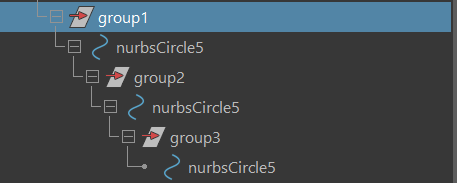
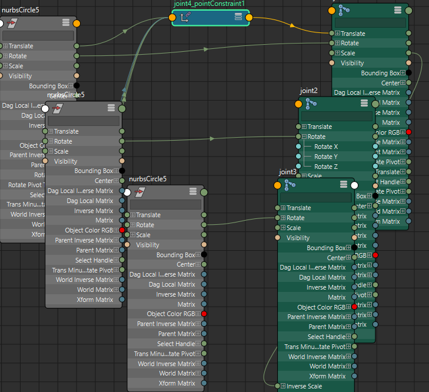
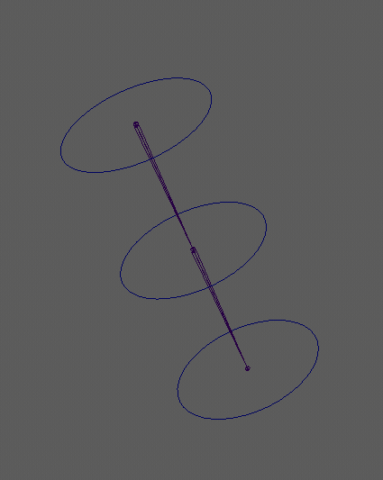
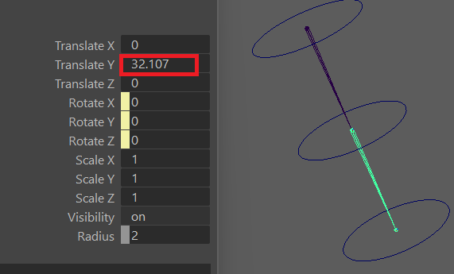
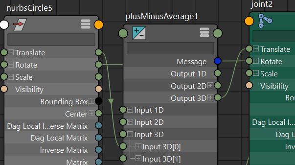
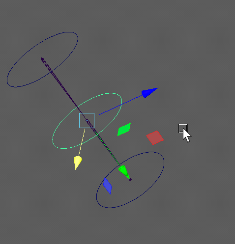
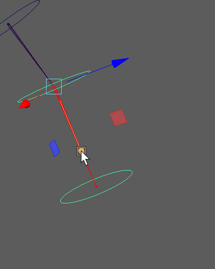

Rigging04-FK
三种绑定思路（也可以说是四种），可以用在 FK 绑定上，主要学一下去掉约束的优化思路。
思路一： parent constraint + parent-child hierarchy （又快又稳）
用 parent constraint 来让控制器约束关节的 translate, rotate, scale 的属性
parent-child hierarchy 使得控制器达到一个 FK 的效果，父控制器的移动，旋转等可以传递给子控制器。

思路二：direct connection + parent-child / flat hierarchy （有些繁琐，减少了 constraint）
前提：关节必须保持在一条直线上面，如果有弯曲角度，控制器在移动时会偏离关节。
后面会有两者效果比对， 以及我对于控制器偏离关节的理解。
direct connection + parent-child hierarchy
- 用 point constraint 让根关节的 translate 与根控制器一致。
- 在 node editor 中，连接所有控制器的 rotate 和关节的 rotate 属性。


旋转效果与思路一的效果一样 - 对于 translate 属性，如果直接连接控制器和关节，那么会出现关节立马偏移出父关节的现象。
原因是关节本身 translate 属性有一个初始值，不为 0 。
。
所以用一个 PlusMinusAverage node，给控制器的 translate 属性加上关节的 translate 的初始值，再连接
到关节的 translate 属性上。
展示一下效果:
关节必须保持在一条直线上面，如果有弯曲角度，控制器在移动时会偏离关节。
原因：控制器会与关节朝向保持一致，所以控制器移动方向为关节朝向，而关节本身的移动是以父关节为原点，
通过父关节的朝向来计算 translate 数值。
展示一下偏离关节的效果, 可以观察控制器的移动方向和关节的移动方向：

如果用这个思路，要确保关节保持直线，同时后面要手动旋转关节，设置 preferred angle
direct connection + flat hierarchy
这里的 flat hierarchy 是视频作者暂且起名的，具体结构为所有控制器都在相同层级，没有父子关系。
这里构造父子关系的方式是，将上一个控制器的 offset 空组移动到下一个控制器的位置，然后用 decomposeMatrix 分解出 translate 属性，
再连接到下一个控制器的 translate
matrix node (硬核)
Reference
- Maya rigging tutorials: constraints, direct connections, matrix nodes workflow fundamentals
https://youtu.be/KIWanSxaL_U?si=54VAXVGyk52Rhtjf
本博客所有文章除特别声明外，均采用 CC BY-NC-SA 4.0 许可协议。转载请注明来源 窝窝乡！
评论